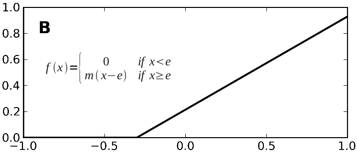
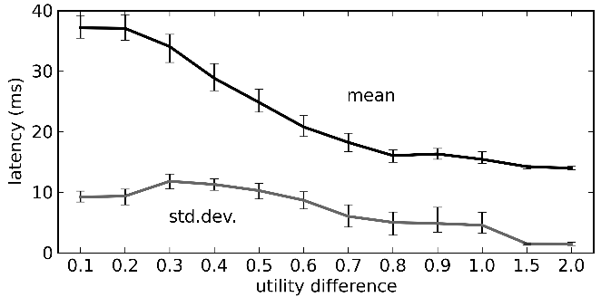
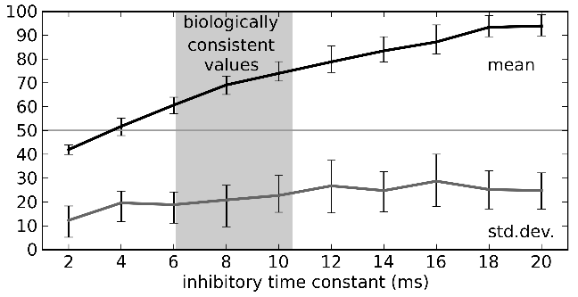

5. Cognitive models¶
Larger systems¶
So far, we’ve seen how to implement various basic components:
- representations
- linear transformation
- nonlinear transformation
- feedback
It is possible to use these components to build full cognitive models using spiking neurons (see http://nengo.ca/build-a-brain) that are:
- constrained by the actual properties of real neurons in real brains (numbers of neurons, connectivity, neurotransmitters)
- able to produce behavioural predictions in terms of timing, accuracy, lesion effects, drug treatments, and more.
Some simple examples of this are available in the demo directory.
demo/armcontrol.pytakes an existing engineering control model for what angles to move joints to to place the hand at a particular position.

demo/vehicle.pyconnects range sensors to opposite motors on a wheeled robot.
Binding Semantic Pointers (SPs)¶
We want to manipulate sophisticated representational states; this is the purpose of describing the Semantic Pointer Architecture (SPA)
The main operation to manipulate representations in the SPA is circular convolution (for binding). Let’s explore a binding circuit for semantic pointers.
Open the
demo/convolve.pydemo.Input: Two semantic pointers (high-dimensional vectors)
Output: One semantic pointer (binding the original two)
Implementation: element-wise multiplication of DFT (i.e., circular convolution)
Note
There is a drag and drop template for this operation.

To deal with high-dimensional vectors, we don’t want to have to set each individual value for each vector. That would require 100 controls to configure a single 100-dimensional vector.
Nengo Interactive Plots has a specialized “semantic pointer” graph for these high-dimensional cases.
Instead of showing the value of each element in the vector (as with a normal graph), it shows the similarity between the currently represented vector and all the known vectors. “How much like CAT is this? How much like DOG? How much like RED? How much like TRIANGLE?”
You can configure which comparisons are shown using the right-click menu. You can also use it to _set_ the contents of a neural group by right-clicking and choosing “set value”. This will force the neurons to represent the given semantic pointer. You can go back to normal behaviour by selecting “release value”.
- Use the right-click menu to set the input values to “a” and “b”. The output should be similar to “a * b”.
This shows that the network is capable of computing the circular convolution operation, which binds two semantic pointers to create a third one.
- Use the right-click menu to set the input values to “a” and “~a * b”. The output should be similar to “b”.
Note
‘~’ is an approximate inverse operator.
This shows that convolution can be used to transform representations via binding and unbinding, since “a * (~a * b)” is approximately “b”.
Control and action selection: Basal Ganglia¶
Note
Much of what follows is a summary of Chapter 5 of “How to Build a Brain,” and can be constructed using the drag and drop templates in Nengo (specifically, Basal Ganglia, BG Rule, Thalamus, Binding, Gate, and Integrator). Also see these demos.
Pretty much every cognitive model has an action selection component with these features:
- Out of many possible things you could do right now, pick one.
- Usually mapped on to the basal ganglia.
- Some sort of winner-take-all calculation based on how suitable the various possible actions are to the current situation.
First, let’s introduce the problem of action selection.
Input: A vector representing how good each action is (for example, [0.2, 0.3, 0.9, 0.1, 0.7])
Output: Which action to take ([0, 0, 1, 0, 0])
In fact, the output from the basal ganglia is inhibitory, so the output is more like [1, 1, 0, 1, 1]
We could try doing it as a direct function. However:
- The winner-take-all function is highly nonlinear.
- We are likely to get low accuracy.
We could do it by setting up inhibitory interconnections.
- Looks similar to the integrator, but any value above zero would also act to decrease the others.
- Often used in non-spiking neural networks (e.g., PDP++) to do k-winner-take-all.
However, you have to wait for the network to settle, so it can be rather slow.
In Nengo, we use the Basal Ganglia model proposed in Gurney, Prescott, & Redgrave (2001). The drag-and-drop BG templates use this model.

Each component computes the following function:
Their model uses unrealistic rate neurons with that function for an output. We can use populations of spiking neurons and compute that function. We can also use correct timing values for the neurotransmitters involved.
- Open the
demo/basalganglia.pydemo. - Adjust the input controls to change the five utility values being selected between.
- The graph shows the output from the basal ganglia (each line shows a different action).
- The selected action is the one set to zero.
Comparisons to neural data:
- Ryan & Clark, 1991 stimulated regions in medial orbitofrontal cortex, measured from GPi, and saw how long it takes for a response to occur.

To replicate these results:
Set the inputs to [0, 0, 0.6, 0, 0].
Run simulation for a bit, then pause it.
Set the inputs to [0, 0, 0.6, 1, 0].
Continue the simulation.
Measure how long it takes for the neurons corresponding to the fourth action to stop firing.

In rats: 14 – 17 ms. In our model: 14 ms (or more if the injected current isn’t extremely large).

For more details, see Stewart et al., 2010.
Sequences of actions¶
To do something useful with the action selection system we need two things:
- A way to determine the utility of each action given the current context.
- A way to take the output from the action selection and have it affect behaviour.
We do this using the representations of the semantic pointer architecture:
- Any cognitive state is represented as a high-dimensional vector (a semantic pointer).
- Working memory stores semantic pointers (using an integrator).
- We calculate the utility of an action by
computing the dot product between the current state
and the state for the action
(i.e., the IF portion of an IF-THEN production rule)
- This is a linear operation, so we can directly compute it using the connection weights between the cortex and the basal ganglia.
- The THEN portion of a rule says what semantic pointers to send to what areas of the brain. This is again a linear operation that can be computed on the output of the thalamus using the output from the basal ganglia.
A simple example is available as a demo.
- Open the
demo/sequence.pydemo. - Five possible states: A, B, C, D, and E.
- Rules for IF A THEN B, IF B THEN C, IF C THEN D, IF D THEN E, IF E THEN A.
- Five production rules (semantic pointer mappings) cycling through the five states.

You can set the contents of working memory in Interactive Plots by opening an SP graph, right-clicking on it, and choosing “set value” (use “release value” to allow the model to change the contents).
Cycle time is around 40 ms, slightly faster than the standard 50 ms value used in ACT-R, Soar, EPIC, and others.
The cycle time is primarily determined by the time constant for the neurotransmitter GABA.

Routing of information¶
What about more complex actions?
- Same model as above, but we want visual input to be able to control where we start the sequence.
- Simple approach: add a visual buffer and connect it to the working memory.
Open the demo/sequencenogate.py demo.

The problem with this model is:
- If this connection always exists, then the visual input will always override what’s in working memory. This connection needs to be controllable.
To solve this problem, we:
- Actions need to be able to control the flow of information between cortical areas.
- Instead of sending a particular SP to working memory, we need “IF X THEN transfer the pattern in cortex area Y to cortex area Z”?
- In this case, we add a rule that says “IF it contains a letter, transfer the data from the visual area to working memory”
- We make the utility of the rule lower than the utility of the sequence rules so that it will only transfer that information (open that gate) when no other action applies.
Open the demo/sequencerouted.py demo to see this solution.

The pattern in the visual buffer is successfully transferred to working memory, then the sequence is continued from that letter.
It takes longer (60 – 70 ms) for these more complex productions to occur.
Question answering¶
The control signal in the previous network can also be another semantic pointer that binds and unbinds the contents of the visual buffer (instead of just a gating signal).
This more flexible control does not add processing time, and allows processing the representations while routing them. This allows us to perform arbitrary symbol manipulation such as “take the contents of buffer X, unbind it with buffer Y, and place the results in buffer Z”.
Consider the example of question answering.
The system is presented with a statement such as “red triangle and blue circle”.
A semantic pointer representing this statement is placed in the visual cortical area:
statement + red * triangle + blue * circle.statementis removed after a period of time.
Now a question is presented, such as “What was Red?”
question + redis presented to the same visual cortical area as before.- The goal is to place the correct answer in a motor cortex area (in this case, “triangle”).
This is achieved by creating two action rules:
- If a statement is in the visual area, move it to working memory (as in the previous example).
- If a question is in the visual area, unbind it with working memory and place the result in the motor area.
This model can be seen in the demo demo/question.py.
Note
This example requires a much larger simulation than any of the others in this tutorial (more than 50,000 neurons). If you run this script, Nengo may take a long time (hours!) to solve for the decoders and neural connection weights needed.